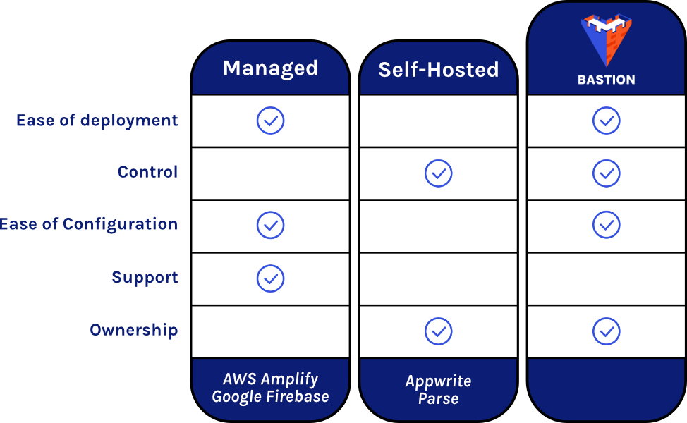
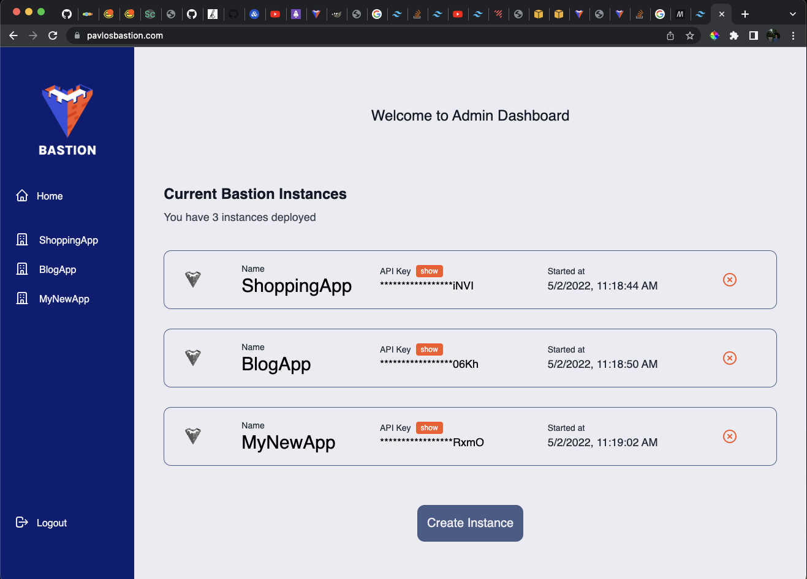

Backend-as-a-Service Solution

Bastion is an open-source solution that provides a customizeable and scaleable backend, deployable within minutes.

Bastion grants you full ownership and control of your backend, and integrates with AWS to provide flexibility and scaleability on demand.

Users can deploy and manage multiple backends. Cloud code functionality provided using AWS Lambda allows those backends to be customized to fit the needs of each project.